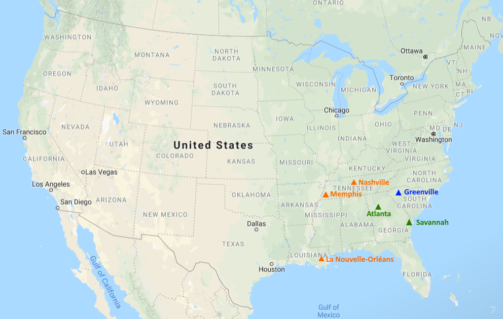

Ok, et avec des mots ?
Pierre profite de sa césure pour faire un stage aux Etats-Unis, à Greenville, en Caroline du Sud (cf. une carte des Etats-Unis
juste en dessous !). Alors pour mes vacances (prolongées) de Noël, je suis venue le voir et on en a profité pour découvrir
ce pays ! Spoiler, le pays est vaste, varié, et on est pas mal sortis des sentiers battus (mais on a pas grimpé et fait juste
une rando !)
Concrètement, on a fait un petit roadtrip sur la semaine et demi autour de Noël et du Nouvel An(merci la fermeture de l'usine !).
Puis on s'est "posés" à Greenville (Pierre n'étant plus en vacances...) Bien sûr on a profité du week-end pour aller randonner un peu :)
Et enfin, les quelques jours précédents mon retour en France ont été consacré à la visite de Savannah, une ville côtière, et d'Atlanta.
Une carte, une carte !
Sur cette carte, j'ai placé les villes dont j'ai déjà un peu parlé dans le tableau. Ne vous inquiétez pas, des cartes plus
détaillées accompagneront la description plus détaillée de notre itinéraire (logique non ?)
En bleu, c'est Greenville, là où Pierre habite pour 6mois. En orange, ce sont les villes principales que nous avons visité
pendant mes 10premiers jours. En verre enfin, ce sont les villes qu'on a découvert le dernier we avant que je rentre :)
